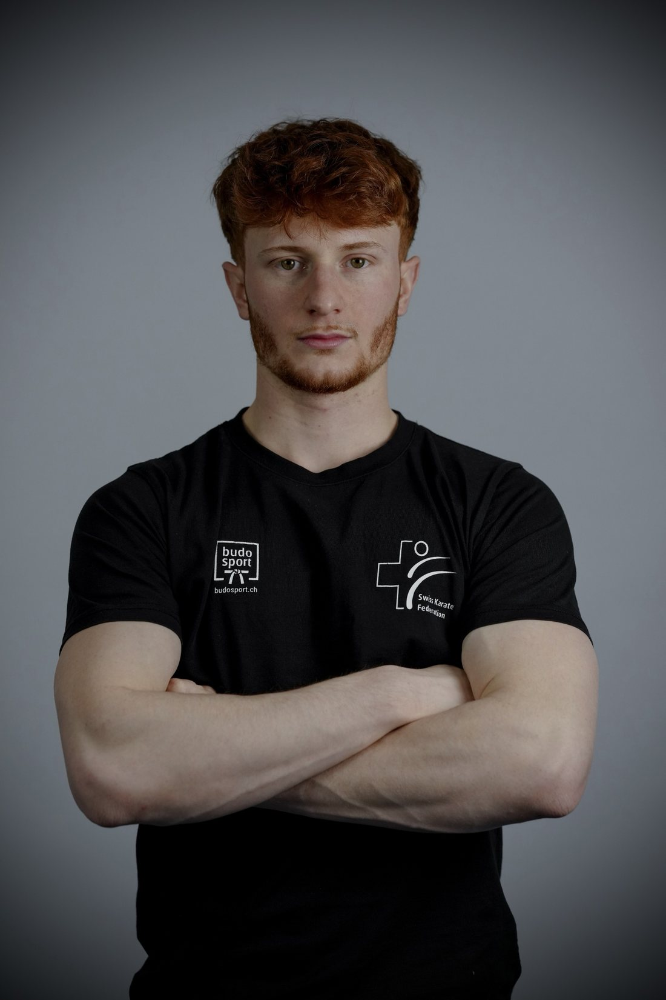
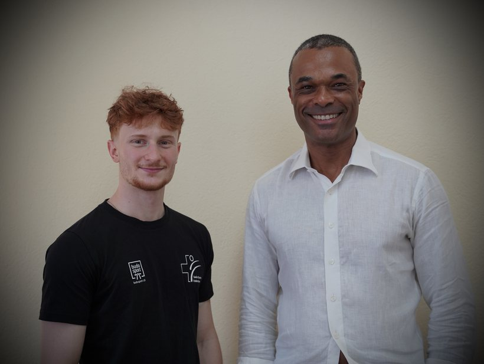
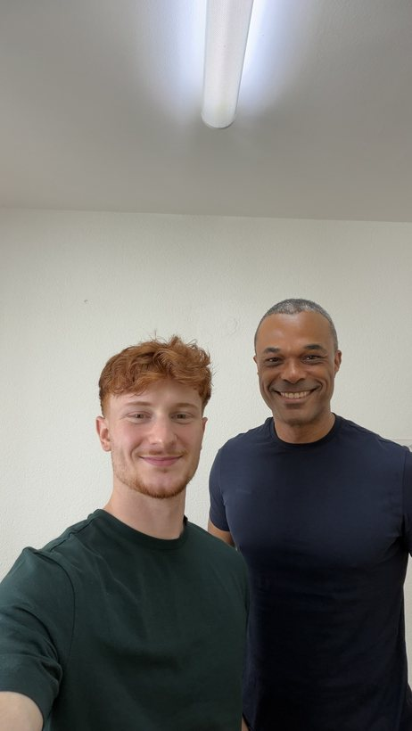
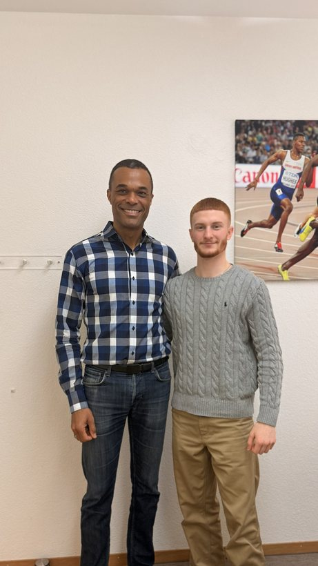
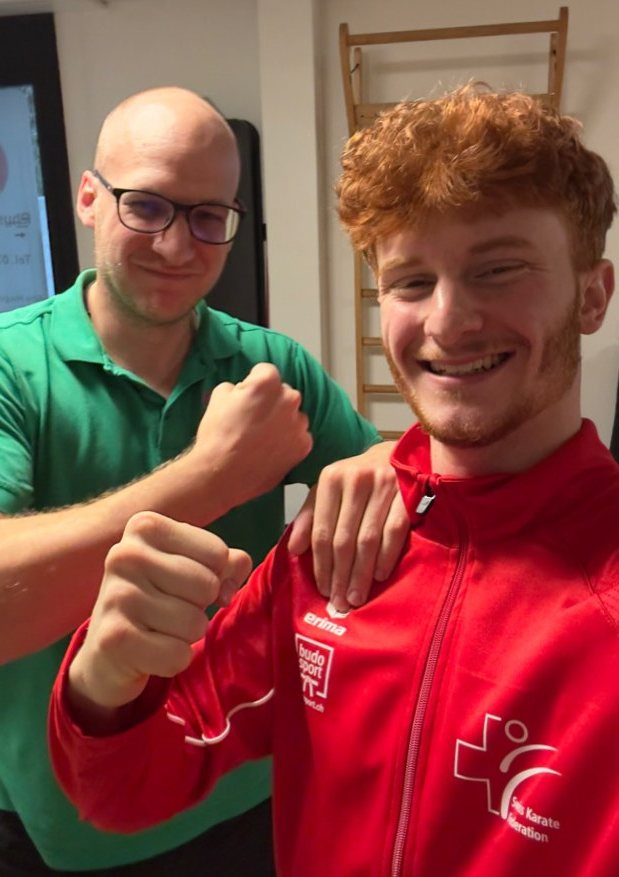
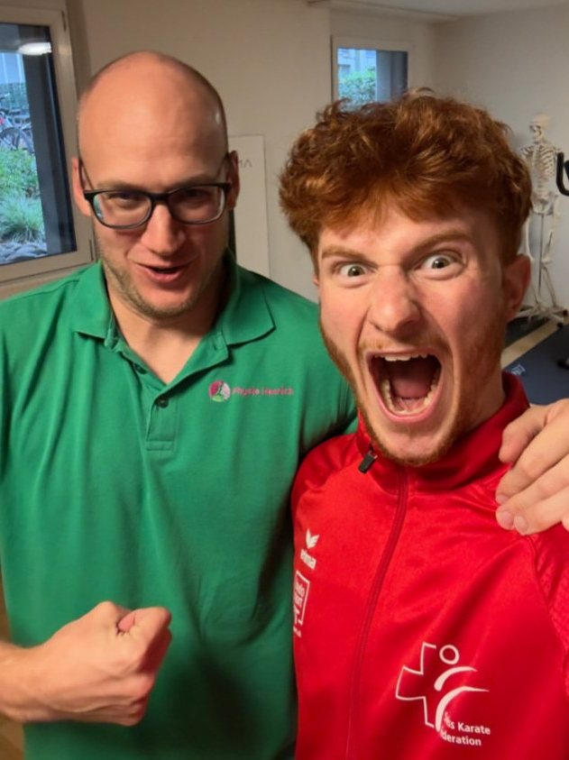
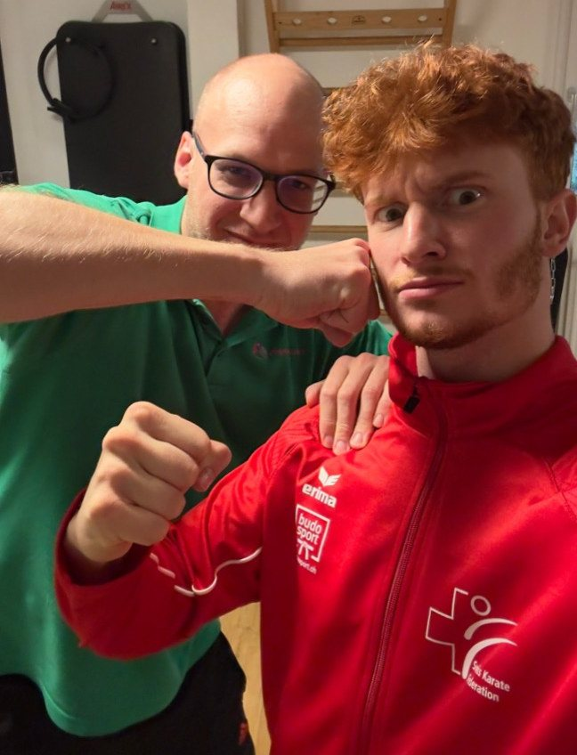

Zielstrebig
Mein nächstes Ziel ist klar: die Top 32 der Welt. Jeder Trainingstag bringt mich näher dahin.
Kumite −60 kg im Schweizer Nationalkader. Aufgewachsen in Sisseln, zu Hause auf der Matte, mit einem klaren Ziel: die Top 32 der Welt.

Mein nächstes Ziel ist klar: die Top 32 der Welt. Jeder Trainingstag bringt mich näher dahin.
Rund zehn Trainings pro Woche und daneben die Lehre. Das geht nur mit einem klaren Plan.
Ich gewinne Kämpfe nicht mit Kraft, sondern mit Timing: im richtigen Moment treffen.
Verletzungen gehören dazu. Nach jeder bin ich zurückgekommen, und aufgeben ist für mich keine Option.
Ich bin 2003 geboren und in Sisseln im Fricktal aufgewachsen. Mit sechs Jahren stand ich beim Karateclub Laufenburg zum ersten Mal auf der Matte. Seitdem hat mich Karate nicht mehr losgelassen.
Schon als Kind und Jugendlicher war ich international erfolgreich: 2015 Vize-Weltmeister Kata U14 an der WSKF-WM in Tokio, 2018 dreifacher Sieger am WSKF World Cup in Dublin. Bei den Schweizer Meisterschaften holte ich 2019, 2020 und 2022 den Titel.
Heute kämpfe ich im Kumite, −60 kg, und trainiere rund zehnmal pro Woche bei Hayabusa Karate-Do Basel. 2023 gab ich mein Debüt an EM und WM der Elite, 2024 wurde ich Fünfter an der U21-WM. Mein bisher stärkstes Resultat ist der Viertelfinal an der Europameisterschaft 2026 in Frankfurt. Im Oktober 2026 wurde ich zudem Schweizer Meister der Elite.
Neben dem Sport mache ich meine Lehre als Kaufmann EFZ bei Securitas. Training, Turniere und Ausbildung unter einen Hut zu bringen, verlangt Planung. Genau das macht mich auch auf der Matte stärker.
Auf Weltniveau sind alle schnell, stark und gut vorbereitet. Den Unterschied macht oft, wer im entscheidenden Moment ruhig bleibt. Darum ist Mentaltraining ein fester Teil meiner Vorbereitung.
Mein Mentalcoach ist Ray Popoola. Mit ihm arbeite ich daran, unter Druck klar zu bleiben, mich vor dem Kampf voll zu fokussieren und nach Rückschlägen schnell wieder zu mir zu finden.



Kumite verlangt dem Körper alles ab: Explosivität, schnelle Richtungswechsel und rund zehn Trainings pro Woche. Damit ich an den grossen Turnieren bereit bin, arbeite ich eng mit meinem Physiotherapeuten zusammen.
Stephan Henrich von Physio Henrich hält meinen Körper wettkampfbereit. Er bereitet mich gezielt auf wichtige Wettkämpfe wie die Weltmeisterschaft vor und hilft mir, nach Verletzungen stark zurückzukommen.



Ich wohne zusammen mit meinem Vater und meiner Schwester in Sisseln. Zu Hause tanke ich auf, zwischen Training, Lehre und Turnieren.
Wenn ich nicht trainiere, stehe ich am liebsten am Grill. Kochen ist mein Ausgleich, und als Sportler weiss ich gutes Essen besonders zu schätzen.
Ich mache meine kaufmännische Lehre bei Securitas. Der Arbeitsalltag gibt mir Struktur und einen Blick über den Sport hinaus.
Für Sponsoring, Medien oder Trainingskooperationen. Am schnellsten per E-Mail.
e.timmer@gmx.ch